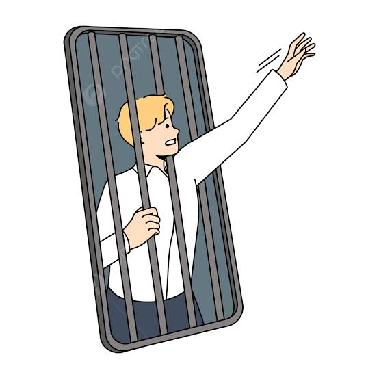

Teknoloji Bağımlılığı Teknolojinin gelişmesiyle birlikte hayatımız birçok yönden kolaylaşmıştır. Akıllı telefonlar, bilgisayarlar ve internet sayesinde bilgiye hızlı bir şekilde ulaşabilmekte, iletişim kurabilmekte ve çeşitli işlemlerimizi kolayca gerçekleştirebilmekteyiz. Ancak teknolojinin bilinçsiz ve aşırı kullanımı, teknoloji bağımlılığı adı verilen önemli bir soruna yol açmaktadır. Teknoloji bağımlılığı, bireyin teknolojik cihazları kontrolsüz bir şekilde kullanması ve bu kullanımın günlük yaşamını olumsuz etkilemesi durumudur. Teknoloji bağımlısı olan kişiler, uzun saatler boyunca telefon, bilgisayar veya tablet başında vakit geçirirler. Bu durum ders başarısının düşmesine, sosyal ilişkilerin zayıflamasına ve sağlık sorunlarının ortaya çıkmasına neden olabilir. Özellikle gençler arasında yaygın olarak görülen teknoloji bağımlılığı; dikkat dağınıklığı, uyku düzensizliği, göz yorgunluğu ve fiziksel hareketsizlik gibi problemlere yol açmaktadır. Ayrıca kişiler, aileleri ve arkadaşlarıyla yeterince vakit geçiremedikleri için sosyal hayattan uzaklaşabilmektedir. Teknoloji bağımlılığını önlemek için teknoloji kullanımına belirli sınırlar koyulmalıdır. Boş zamanlarda spor yapmak, kitap okumak ve sosyal etkinliklere katılmak gibi faaliyetlere yönelmek faydalı olacaktır. Aileler de çocuklarının teknoloji kullanımını takip etmeli ve bilinçli kullanım konusunda onlara rehberlik etmelidir. Sonuç olarak teknoloji, doğru kullanıldığında hayatı kolaylaştıran önemli bir araçtır. Ancak aşırı ve bilinçsiz kullanım, bireyin fiziksel, zihinsel ve sosyal yaşamını olumsuz etkileyebilir. Bu nedenle teknolojiyi dengeli ve bilinçli bir şekilde kullanmak büyük önem taşımaktadır.
